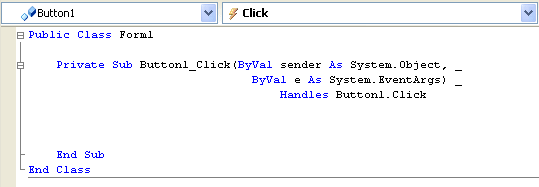
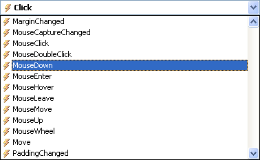
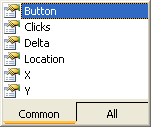
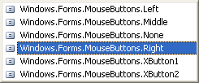
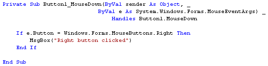
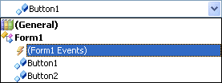

The MouseDown Event in VB .NET
The MouseDown event is available to many controls on the form. A Form can detect when the mouse was held down on it; a textbox can detect when the mouse was held down inside of it; and a Button can detect which mouse button was held down to do the clicking.
We'll see how it all works right now.
First, delete the all but one of the buttons on your form. (You can right click on a control to delete it. If you haven't been following along from the previous lesson, then just create a new project. Add a Button to your form, and leave iton the default name of Button1.)
Go back to your coding window, and delete any code for the button on your form. Delete any Handles code except for Handles Button1.Click. Your coding window should look something like this one (we've used underscores to spread the code out over three lines):

Right at the top of the code window, it says Button1 and Click. The lightning bolt next to Click signifies that it is an Event. If you click the drop down box, you'll see a list of other available events:

Scroll down and find the MouseDown event, as in the image above. When you click on it, a new code stub appears, this one (ours looks a bit messy):
Private Sub Button1_MouseDown(ByValsender As Object, ByVal e As System.Windows.Forms.MouseEventArgs) Handles Button1.MouseDown
End Sub
This is a Private Subroutine called Button1_MouseDown. Notice that it Handles the Button1 MouseDown event, and not Button1.Click.
Exploring the Event Arguments
In between the round brackets of the Subroutine, we still have ByVal sender As Object. But we have a new argument now (2012 users will just see e As MouseEventArgs):
ByVal e As System.Windows.Forms.MouseEventArgs
The name of the variable is still e. But the type of Object being stored inside of the e variable is different:
System.Windows.Forms.MouseEventArgs
The bit on the end of all that is what we're interested in: MouseEventArgs. This stands for Mouse Events Arguments. What is being stored inside of the e variable is information the Mouse Event: Did you click a button, if so which one?
The only thing you need to do to detect which button was pressed is to access a property of the e variable. Let's see how to do that.
Which Button was Clicked?
Inside of the Button1_MouseDown Subroutine, type the following code:
If e.Button = MouseButtons.Right Then
MsgBox("Right Button Clicked")
End If
As soon as you type the letter "e", you'll see this pop up box:

To detect which button was clicked, you need the first Property on the list: Button. Double click this property to add it to your code. Then after you typed the equals sign, another pop up list appears. This one:

This is a list of available buttons that VB can detect. Left and Right are the ones you'll use most often.
When you've added the If Statement, your coding window should look something like this:

When you're finished writing your code, run your programme. Click the button with your Left mouse button and nothing will happen. Click it with the Right mouse button and you should see the message box display.
No more reading these lessons online - get the eBook here!
MouseDown and the Form
Stop your programme. When you are returned to the coding environment, click the down arrow of Button1 at the top of the code. You'll see a drop down box like this:

Select the one highlighted in the image, "Form1 Events". In the Events box to the right, select MouseDown from the list of available events. A new code stub will appear:
Private Sub Form1_MouseDown( ByVal sender As Object, ByVal e As System.Windows.Forms.MouseEventArgs) Handles MyBase.MouseDown
End Sub
This time, we have a Private Subroutine called Form1_MouseDown. The two arguments are exactly the same as before. The difference is that now this code Handles the MouseDown event for something called MyBase. (This is an object that refers to the code for Public Class Form1.)
The important thing to bear in mind is that we now have a way to detect when a mouse button was clicked on the form itself.
Add the following code inside of Form1_MouseDown:
If e.Button = MouseButtons.Right Then
MsgBox("You clicked on the Form")
End If
The only thing that has changed is the Message Box! The If Statement is exactly the same. Run your programme and test it out. Click anywhere on your Form, and you should see the new message box. However, if you right click on the button, you'll get the old message box. Although the button is on the Form, this is considered a separate control from the Form itself. So it has its own events.
You can detect where on the Form the mouse was when the right mouse button was click. Amend your code for Form1_MouseDown. Change it to this:
Dim xPos As Integer
Dim yPos As Integer
If e.Button = MouseButtons.Right Then
xPos = e.X
yPos = e.Y
MsgBox("The X Position is " & xPos & " The Y Position
is " & yPos)
End If
First, we're setting up two integer variable, xPos and yPos. After that we have the same If Statement as before:
If e.Button = MouseButtons.Right Then
End If
Inside of the If Statement, we're using the X and Y properties of the e variable:
xPos = e.X
yPos = e.Y
The X property returns how far across, from left to right, the mouse is; the
Y property returns how far down, from top to bottom, the mouse is. These values
are assigned to our two variables. The result is displayed in a message box.
When you've wrote the code, run your programme and test it out. Right click anywhere on your form. The new message box should display, telling you where the mouse was when the right button was held down.
Click near the top of the form and you'll see the Y position number go down in value; Click near the bottom of the form and you'll see it go up in value. The very top of the form (or a control) has a Y value of zero.
Click from left to right and you'll see the X numbers go up in value. The very left edge of your form has an X value of zero.
In the next part, we'll explore the KeyDown event.